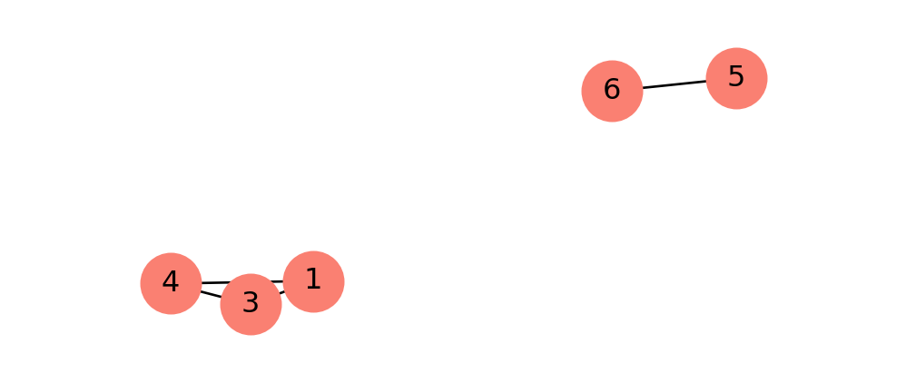
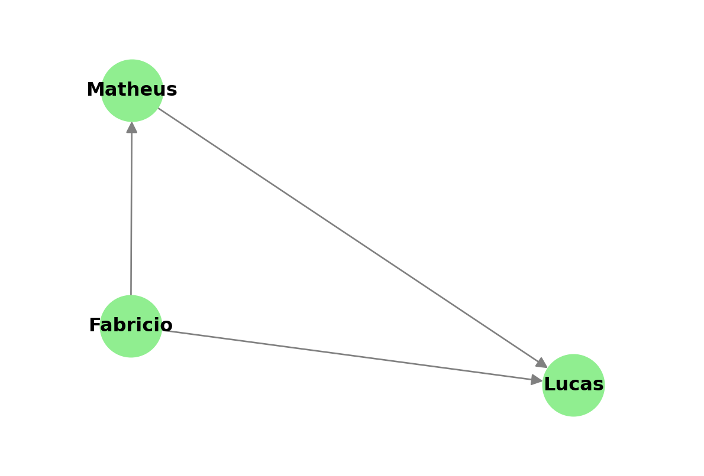
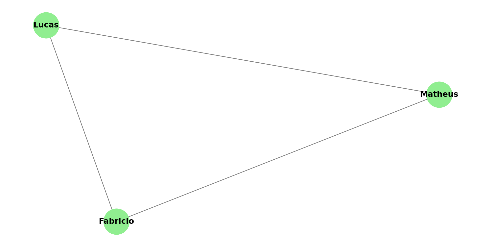
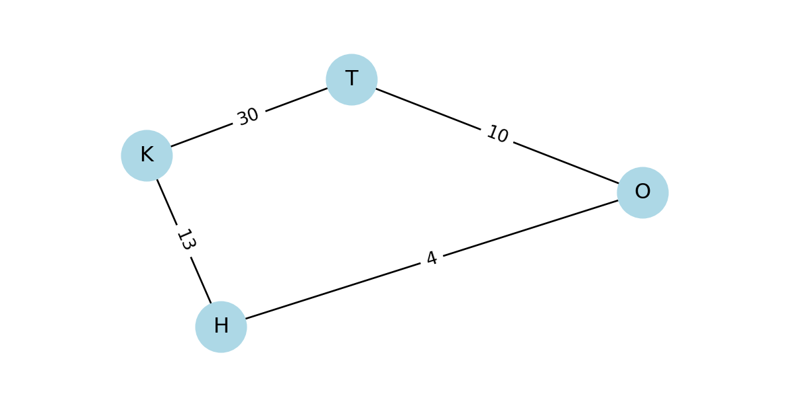
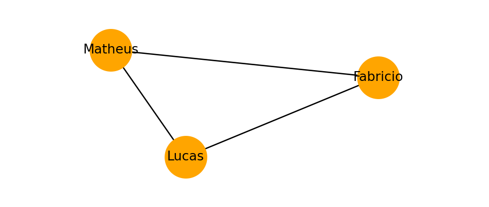

O grafo está conectado? False
Introdução a Redes Neurais
Universidade Tecnológica Federal do Paraná, Cornélio Procópio (UTFPR-CP)
Universidade Tecnológica Federal do Paraná, Cornélio Procópio (UTFPR-CP)
May 7, 2026
Grafos são estruturas compostas por um conjunto de nós (ou vértices) e arestas que conectam esses nós, permitindo representar relações entre diferentes elementos. Formalmente, um grafo pode ser definido como:
\[G = (V, E)\]
em que \(V\) representa o conjunto de vértices e \(E\) o conjunto de arestas do grafo.

A partir de um grafo é possível representar um sistema complexo como: Estrutura de um programa, Sistema Físico e dentra da bilogia temos inúmeros exemplos, Caminhos Metabólicos, Redes Regulatórias, etc .
A partir da união das redes neurais com os grafos podemos resolver diversos tipos de problemas:
import networkx as nx
import matplotlib.pyplot as plt
plt.figure(figsize=(6, 4))
G = nx.DiGraph()
G.add_edges_from([('Fabricio', 'Matheus'), ('Fabricio', 'Lucas'), ('Matheus', 'Lucas')])
nx.draw( G, with_labels=True, node_color='lightgreen', font_weight='bold', node_size=1500, arrowsize=15, edge_color='gray')
plt.margins(0.2)
plt.show()

plt.figure(figsize=(6, 3))
GP = nx.Graph()
GP.add_edges_from([('H', 'O', {"weight": 4}), ('H', 'K', {"weight": 13}),
('K', 'T', {"weight": 30}), ('T', 'O', {"weight": 10})])
pos = nx.spring_layout(GP)
nx.draw(GP, pos, with_labels=True, node_color='lightblue', node_size=800)
# Desenha os pesos das arestas
labels = nx.get_edge_attributes(GP, "weight")
nx.draw_networkx_edge_labels(GP, pos, edge_labels=labels)
plt.margins(0.2)
plt.show()
Um grafo é dito conectado se existe um caminho entra quaisquer dois vértices do grafo, caso contrário, o grafo é dito desconectado.
O grafo está conectado? False
plt.figure(figsize=(5, 2))
Z = nx.Graph()
Z.add_edges_from([('Fabricio', 'Matheus'), ('Fabricio', 'Lucas'), ('Matheus', 'Lucas')])
print(f"Grau(Lucas) = {Z.degree['Lucas']}")
# Desenho do Grafo
nx.draw(Z, with_labels=True, node_color='orange', node_size=1000, font_size=10)
plt.margins(0.3)
plt.show()Grau(Lucas) = 2
Grau:
\[ C_D(v) = \frac{deg(v)}{|V|-1} \]
Proximidade:
\[ C_C(v) = \frac{1}{\sum_u d(v,u)} \]
Intermediação:
\[ C_B(v) = \sum_{s,t} \frac{\sigma_{st}(v)}{\sigma_{st}} \]
Grau de Centralidade = {1: 0.5, 3: 0.5, 4: 0.5, 5: 0.25, 6: 0.25}
Centralidade de proximidade = {1: 0.5, 3: 0.5, 4: 0.5, 5: 0.25, 6: 0.25}
Centralidade de intermediação= {1: 0.0, 3: 0.0, 4: 0.0, 5: 0.0, 6: 0.0}Uma matriz adjacente representa as arestas do grafo, indicando onde existe uma aresta entre dois nós. A matriz tem tamanho \(n \times n\), onde \(n\) é o número de nós do grafo. O valor de \(1\) na célula \((i,j)\) indica que existte uma aresta entre os nós \(i\) e \(j\), caso contrário o valor indicado é \(0\).

A ideia central do Word2Vec fornece a base conceitual para muitos modelos aplicados a grafos. O objetivo do Word2Vec é transformar palavras em vetores, criando representações contínuas capazes de capturar relações semânticas.
Esse objetivo é semelhante ao encontrado em aprendizado em grafos, no qual buscamos gerar representações vetoriais significativas para os nós e para a própria estrutura do grafo.
\[ v_i \rightarrow z_i \in \mathbb{R}^d \]
Um exemplo simples de representação vetorial é: \[\begin{aligned} vec(ator) &= [-2, 3, 1] \\ vec(atriz) &= [-1.9, 2, 1.5] \\ vec(homem) &= [3, -1, -2] \\ vec(mulher) &= [2.5, -2.5, -1] \end{aligned}\]
Uma forma comum de medir a similaridade entre vetores é utilizando a similaridade de cosseno:
\[\text{similaridade de cosseno} = \frac{A \cdot B}{||A|| \cdot ||B||}\]
Com representações vetoriais, torna-se possível capturar relações semânticas entre palavras, por exemplo: \[vec(ator) - vec(homem) + vec(mulher) \approx vec(atriz)\]
As duas principais abordagens para construir modelos Word2Vec são o CBOW (Continuous Bag of Words) e o Skip-Gram.
O modelo Skip-Gram é implementado a partir de pares \((input, contexto)\), em que o termo \(contexto\) representa a palavra que o modelo deseja prever a partir da palavra de entrada.
Dado o tamanho do vetor de contexto \(C\), queremos maximizar a probablidade de ver o contexto dado a palavra de input:
\[ \frac{1}{N}\sum_{n=1}^N \sum_{-C \leq j \leq C} log p(w_{n+j}|w_n) \]
A probabilidade é computada pelo softmax do embeding do contexto \(h_c\) dado o embedding do input \(h_t\):
\[ p(w_c|w_t) = \frac{exp(h_c h_t^T)}{\sum_{i=1}^{|V|}exp(h_i h_t^T)} \]
Um skip-gram possui 2 camadas, uma de projeção linear com a matriz de peso \(W_{embed}\), que recebe o one-hot encoded das palavras e depois uma camada densa com a matriz de pesos \(W_{output}\).
Então temos os passos:
O objetivo de criar representações úteis permanece no DeepWalk, mas, em vez de palavras, utilizamos nós do grafo.
Para isso, emprega-se um algoritmo conhecido como Random Walk, responsável por gerar sequências significativas de nós, de forma análoga às sequências de palavras em linguagem natural.
A ideia central consiste em construir trajetórias no grafo a partir da escolha aleatória de vizinhos a cada etapa. Assim, se determinados nós aparecem frequentemente nas mesmas sequências, isso indica que possuem algum tipo de proximidade estrutural ou semântica dentro do grafo.
DeepWalk nada mais é do que a combinação do Random Walk com o Word2Vec

Referência: https://www.mdpi.com/2227-9059/13/3/536

Até agora, consideramos apenas a topologia do grafo. No entanto, grafos geralmente são mais ricos do que apenas suas conexões: tanto nós quanto arestas podem possuir features associadas.
Para ilustrar isso, utilizaremos o dataset Cora, que representa 2.708 publicações científicas, nas quais as conexões correspondem a citações entre os artigos. Cada publicação é descrita por um vetor binário de 1.433 palavras únicas. O objetivo é classificar cada nó em uma de 7 categorias possíveis.
No modelo tradicional de redes neurais, podemos definir a representação como \(h_A = x_A W^T\), em que \(x_A\) é o vetor de entrada do nó (A) e \(W\) é a matriz de pesos aprendida.
O problema é que, em um grafo, os vetores de entrada correspondem apenas às features dos nós, o que significa que cada nó é tratado de forma isolada, sem considerar suas conexões Para incorporar simultaneamente a informação das features e da topologia do grafo, é necessário considerar a vizinhança de cada nó, agregando informações dos nós conectados a ele.
Graph Linear Layer:
\[ h_a = \sum_{i \in \mathcal{N}_A} x_i W^T \]
Por questão de eficiência utilizamos a matriz adjacência que é mais simples e rápido de computar:
\[ H = \widetilde{A}^T X W^T \]
Em que \(\widetilde{A} = A + I\), para computar o próprio nó.
Esse conceito foi introduzido por Kipf e Welling em 2017, com o objetivo de propor uma variante das CNNs adaptada para grafos, dando origem às Graph Convolutional Networks (GCNs).
Assim como ocorreu com as CNNs na visão computacional, as GCNs se tornaram uma das arquiteturas mais populares dentro do campo das Graph Neural Networks (GNNs).
O nosso modelo tem uma limitação, vamos verificar novamente como é feito o cálculo:
\[ h_i = \sum_{j \in \mathcal{N}_i} x_j W^T \]
Perceba que não é levado em consideração o número de vizinhos, ou seja se um nó possui 1 vizinho e outro 100, não existe uma normalização, logo os valores ficarão muito discrepantes.
Uma forma de resolver esse problema é simplesmente normalizar pelo grau do nó.
\[ h_i = \frac{1}{deg(i)} \sum_{j \in \mathcal{N}_i} x_j W^T \]
Para transformar a normalização em uma operação de multiplicação de matrizes, utilizamos a matriz de grau, que contabiliza o número de vizinhos de cada nó. A partir disso, existem duas formas comuns de normalização:
A GCN utiliza uma normalização híbrida, com isso temos a GCN final:
\[ H = \widetilde{D}^{-\frac{1}{2}} \widetilde{A} \widetilde{D}^{-\frac{1}{2}} X W^T \]
As Graph Attention Networks (GATs) representam uma evolução teórica das GNNs. Em vez de utilizar apenas uma normalização fixa, elas introduzem fatores de ponderação aprendidos, calculados a partir da importância relativa de cada nó por meio de self-attention.
Esses fatores são chamados de attention scores \(\alpha_{ij}\), que determinam o peso da influência do nó \(j\) sobre o nó \(i\). Com isso, a operação de graph attention pode ser definida como:
\[ h_i = \sum_{j \in \mathcal{N}_i} \alpha_{ij} W x_j \]
Os scores de atenção calcula a importância entre o nó central \(i\) e o vizinho \(j\). Na camada de atenção do grafo, isso é representado pela concatenação dos vetores \([Wx_i || Wx_j]\):
\[ a_{ij} = W_{att}^T[Wx_i || Wx_j] \]
Após isso é aplicado uma função de ativação LeakyRelu e uma softmax:
\[ e_{ij} = LeakyRelu(a_{ij}) \alpha_{ij} = softmax(e_{ij}) = \frac{exp(e_{ij})}{\sum_{k \in \mathcal{N}_i} exp(e_{ik})} \]
Como já vimos na aula passada normalmente não usamos self-attention mas a multi-head attention. Existe duas formas de fazer isso na GAT:
Uma regra simples para saber qual usar é: Se está em uma camada intermediaria utilize concateção, quando é a última camada da rede então use a média.
Uma segunda versão do Graph Attention Network (GAT) foi proposta por Brody et al. (2021), com o objetivo de aumentar a capacidade de representação do modelo. A principal mudança é que, em vez de aplicar o mecanismo de atenção sobre a transformação linear da entrada, a atenção passa a ser aplicada posteriormente, o que torna a modelagem mais expressiva. Assim, a formulação fica:
\[ \alpha_{ij} = \frac{\exp(\text{LR}(\mathbf{a}^\top [\mathbf{W}x_i \Vert \mathbf{W}x_j]))}{\sum_{k \in \mathcal{N}_i} \exp(\text{LR}(\mathbf{a}^\top [\mathbf{W}x_i \Vert \mathbf{W}x_k]))} \]
\[ \alpha_{ij} = \frac{\exp(\mathbf{a}^\top \text{LR}(\mathbf{W} [x_i \Vert x_j]))}{\sum_{k \in \mathcal{N}_i} \exp(\mathbf{a}^\top \text{LR}(\mathbf{W} [x_i \Vert x_k]))} \]
O GraphSAGE (Hamilton et al., 2017) é uma GNN projetada para lidar com grafos de grande escala. Em áreas como biologia, é comum enfrentar problemas de escalabilidade devido ao volume massivo de dados. No entanto, modelos como GCN e GAT não são naturalmente otimizados para esse cenário.
O GraphSAGE introduz duas ideias principais:
Nas primeiras aulas, discutimos o conceito de batches e como os otimizadores os utilizam durante o treinamento. Em redes tradicionais, essa amostragem é direta: em dados tabulares, cada linha pode ser um exemplo; em imagens, cada imagem já constitui uma amostra independente.
No caso de grafos, porém, essa definição não é tão simples, pois os dados são interdependentes e estruturados. Assim, surge a questão: como realizar a amostragem de um batch a partir de um grafo?
A ideia consiste em duas etapas. Na primeira, ao calcular o embedding de um nó, utilizamos apenas a sua vizinhança. Isso significa que, para computá-lo, são necessários apenas os vizinhos diretos (1-hop).
Se a GNN possuir duas camadas, então o nó passa a depender dos vizinhos dos vizinhos (2-hops), e assim sucessivamente conforme a profundidade da rede aumenta.

Contudo, a computação no grafo torna-se cada vez mais custosa à medida que o número de hops aumenta ou quando o grau dos nós é muito elevado.
Para o segundo caso, uma forma de contornar esse problema é por meio da amostragem de vizinhos, na qual apenas um subconjunto dos vizinhos é utilizado durante a computação das representações dos nós.

A operação de agregação é somente para verificar qual operação usar para computar os embeddings, no artigo original 3 operações foram apresentadas:
Vamos usar o agregador da média:
\[ h_i = \sigma(W \dot mean_{j \in \mathcal{N}_i}(h_j)) \]
Curso Redes Neurais - GNNs | Lucas Otávio